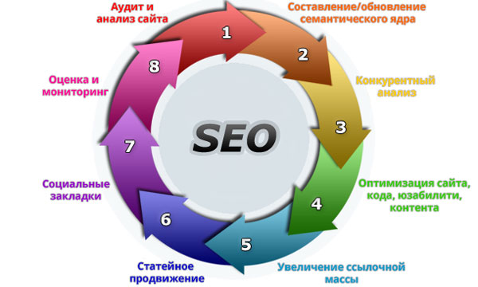

᠌ ᠌ ᠌᠌ ᠌ ᠌ ᠌ ᠌ ᠌
Принципы seo продвижения сайта ᠌ ᠌ ᠌ ᠌᠌ ᠌ ᠌ ᠌᠌ ᠌ ᠌ ᠌᠌ ᠌ ᠌ ᠌᠌ ᠌ ᠌ ᠌᠌ ᠌ ᠌ ᠌᠌ ᠌ ᠌ ᠌᠌ ᠌ ᠌ ᠌᠌ ᠌ ᠌ ᠌ ᠌ ᠌ ᠌᠌ ᠌ ᠌ ᠌ ᠌ ᠌ ᠌ ᠌ ᠌᠌ ᠌ ᠌ ᠌ ᠌ ᠌ ᠌ ᠌ ᠌ ᠌ ᠌ ᠌ ᠌ ᠌ ᠌᠌ ᠌ ᠌ ᠌᠌᠌ ᠌ ᠌᠌᠌ ᠌ ᠌᠌᠌ ᠌ ᠌᠌᠌᠌᠌᠌᠌᠌᠌᠌᠌᠌᠌᠌᠌᠌᠌᠌ ᠌ ᠌᠌᠌ ᠌ ᠌᠌᠌ ᠌ ᠌᠌᠌ ᠌ ᠌ ᠌᠌ ᠌ ᠌ ᠌ ᠌ ᠌᠌ ᠌ ᠌᠌ ᠌ ᠌ ᠌ ᠌ ᠌᠌ ᠌ ᠌᠌ ᠌← Hазад
᠌ ᠌ ᠌᠌ ᠌ ᠌ ᠌ ᠌ ᠌
После того, как вы обзавелись сайтом, необходимо подумать о его раскрутке. Чтобы попасть на первые позиции поисковой выдачи и привлечь, как можно, больше посетителей на свой ресурс, понадобится уделить особое внимание сео продвижению сайта.
᠌
Что это такое
᠌
Чтобы заниматься раскруткой сайта, необходимо понимать, что такое seo продвижение.
᠌
Аббревиатура SEO расшифровывается следующим образом: Search Engine Optimization.
᠌
Это не что иное, как оптимизация ресурса и его содержимого (контента) для правильного отображения в поисковых системах.
᠌
Что представляет собой оптимизация и как правильно ее провести, чтобы не навредить сайту?
᠌
Часто это не только большое количество входящих ссылок, но и правильный выбор донора, составление анкора, который будет способствовать увеличению переходов по ссылке, тем самым улучшая поведенческие факторы.
᠌
᠌
Оптимизированный ресурс, как правило, имеет грамотно составленное СЯ (семантическое ядро), т.е. каждая страница заточена под определенный поисковый запрос и релевантна ему.
᠌
Правильное СЯ нередко является ключевым фактором продвижения ресурса, помогая ему быстро пробиться в топ Яндекса или другой поисковой системы.
᠌
Зачем нужно seo продвижение сайта
᠌
Еще лет десять назад Интернет не был так востребован, как сегодня. На сегодняшний день трудно найти человека, который бы не имел доступа в сеть, хотя бы с мобильного телефона. Огромное количество людей не только ищут нужную информацию в Интернете, но и имеют возможность пообщаться в социальных сетях.
᠌
В то же время у многих пользователей появляется возможность продвигать свой бизнес через сети, размещая рекламу или посредством создания сайтов, предлагающих товары и услуги.
᠌
Но, чтобы интернет-бизнес процветал и мог приносить ощутимую прибыль, необходима раскрутка и seo продвижение сайта, чтобы такие запросы, как «купить что-то» или «продать слона» очутились на первых позициях в поисковой выдаче.
Здесь важно все сделать правильно, чтобы вовремя занять нужные позиции.
᠌
Почему важно попасть в топ
᠌
Топовое место – это не только хороший целевой трафик, но и престиж компании.
Если сайт находится в самом верху поисковой выдачи, то данный факт будет оказывать положительное влияние на лояльность пользователей.
᠌
Как результат – увеличение оборота компании.
᠌
Так как посетители редко переходят на вторую страницу поисковой выдачи, то необходима постановка цели продвижения ресурса не дальше, чем одно из первых 10 мест.
᠌
Если сайт попадет на вторую страницу, то получит не более 4% переходов от общего количества посетителей, а значит и столько же потенциальных покупателей.
᠌
Надо ли сразу составлять список нужных запросов
᠌
Список ключевых фраз следует составить заранее и уже по ним продвигать ресурс.
Ключевых слов должно быть много, но их количество зависит от тематики сайта.
᠌
Можно ли использовать СЕО самостоятельно
᠌
Чтобы получить положительный результат, SEO-продвижением веб-ресурса должен заниматься специалист.
᠌
Неумелые действия могут не только не дать желаемого результата, но привести к штрафным санкциям от поисковых систем.
᠌
Попадание ресурса в бан приводит к исключению страниц сайта из поиска, что означает полную гибель проекта.
᠌
Требуется ли нанимать специалиста, если о ресурсе и так все знают
᠌
Важно понимать, что клиенты ищут сайт в Интернете по запросу.
᠌
Если страницы ресурса не оптимизированы под определенный запрос, то, скорее всего, в поиске появятся сайты-конкуренты.
᠌
Зачем пользователю искать ваш сайт, если в сети полно похожих. В результате его могут переманить конкуренты и вы потеряете целевого посетителя.
᠌
Как провести
᠌
Правильная оптимизация ресурса – залог его продвижения в топ. Поэтому seo продвижение необходимо для повышения его позиций.
᠌

᠌
Пошаговая инструкция по сео оптимизации включает следующие обязательные этапы:
᠌
-Поиск ошибок на сайте. ᠌
-Проверка домена на наличие санкций от поисковиков. ᠌
-Подбор ключевых запросов (составление СЯ). ᠌
-Составление тегов. ᠌
-Создание карты сайта, как для поисковиков, так и для людей. ᠌
-Составление и загрузка на сайт файла robots.txt. ᠌
-Создание уникального контента на основании составленных ключевых запросов (тексты, графика, видео). ᠌
-Добавление категорий и страниц с описанием под запросы. ᠌
-Осторожная работа со статейными и ссылочными биржами, чтобы не навредить ресурсу. ᠌
Работа с поведенческими факторами
᠌
Большое значение имеет продолжительность сессии. Если пользователь быстро уйдет с сайта, то поисковики расценят это, как отказ.
᠌
Если обнаружится бесполезность или недостаточная информативность контента, то поисковыми системами позиции сайта будут понижены в выдаче.
᠌
Важно, чтобы посетитель нашел на ресурсе то, зачем пришел. То есть страница должна быть не только релевантна запросу, но и полностью ему соответствовать.
᠌
Улучшению поведенческих факторов в SEO продвижении могут способствовать:
᠌
Наличие социальных кнопок с помощью которых пользователи смогут делать репосты и ставить лайки. Такие действия покажут поисковикам полезность информации. А раз сайт интересен людям, значит, он должен быть на верхних позициях в поисковой выдаче. ᠌
Если после прочтения статьи у пользователя остались вопросы, то блок «Похожие статьи», размещенный ниже, может помочь ему найти ответ на них. В результате перехода по ссылке на другую страницу повысит время пребывания на сайте, а значит, уменьшит количество отказов, что будет способствовать улучшению ранжирования ресурса. ᠌
Чтобы посетитель мог свободно ориентироваться на сайте, необходимо создать удобную навигацию. Наличие бокового меню облегчит серфинг по проекту. ᠌
Требования к ресурсу
᠌
Для успешной раскрутки сайта важно также постараться уделить внимание его юзабилити. Необходимо сделать навигацию сайта максимально удобной для пользователя. ᠌
Не забываем о том, что сейчас очень популярны в использовании мобильные устройства, поэтому ресурс должен быть адаптирован к полноценному просмотру на них. ᠌
Скорость загрузки сайта – один из факторов, который может стать причиной отказа посетителя, что ухудшит поведенческие факторы, а следовательно и приведет к понижению позиций ресурса. ᠌
Качество контента. Если это интернет-магазин, то кроме списка товаров и услуг, на сайте должен присутствовать контент, который поможет сделать правильный выбор. ᠌
Правильный сниппет. Обязательно надо проверить, какая информация отражается в выдаче под заголовком. Описание должно быть привлекательным для пользователя и побуждать его к переходу на ресурс, т.е это своего рода реклама страницы, на которую вы предлагаете зайти клиенту. ᠌
С каждым годом требования к СЕО продвижению сайта изменяются и дополняются.
᠌
В настоящий момент главная роль отводится поведенческим факторам.